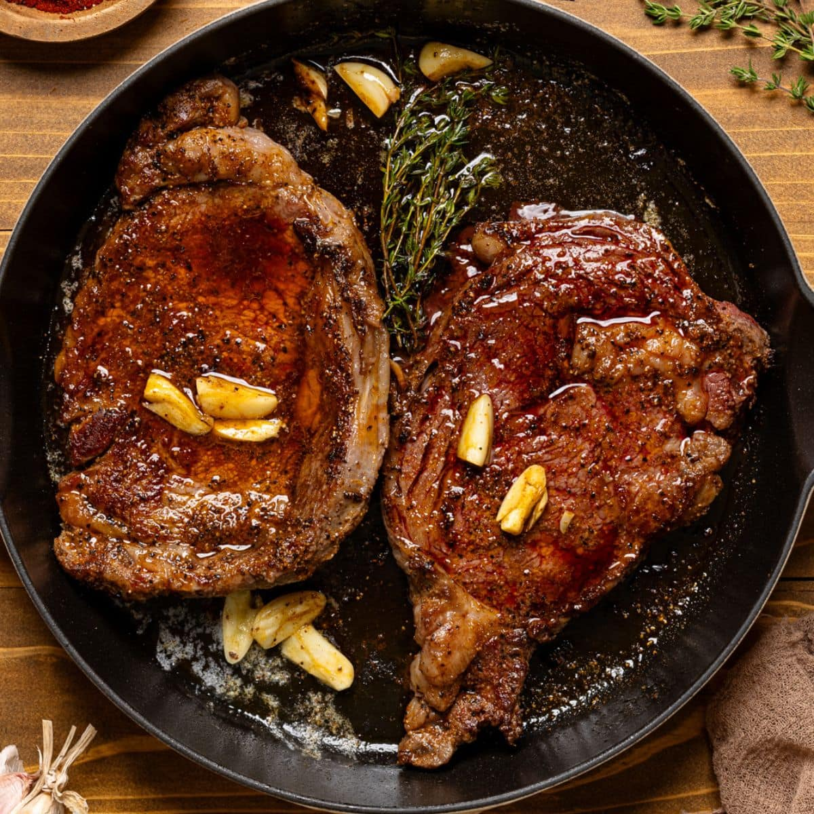

Pan Seared Ribeye

A perfect meal to end a day of hardwork.
This ribeye recipe is the only thing you need to recover your muscles and relax after a long day's work.
It's especially versatile and may be served with many side dishes!
Ingredients:
- Cast iron skillet
- Cut of ribeye
- Salt
- Pepper
- Butter
- Crushed garlic
- Rosemary
Follow Along:
- Preheat your cast iron skillet over the stove on medium heat.
- Place a small portion of butter in the pan.
- Cook the ribeye for about 8 minutes flipping frequently (about every minute).
- Turn the heat up to high and add in more butter.
- Add in your crushed garlic and rosemary and spoon the butter over the steak constantly for 2 minutes.
- Remove from heat and let cool for 5 minutes.